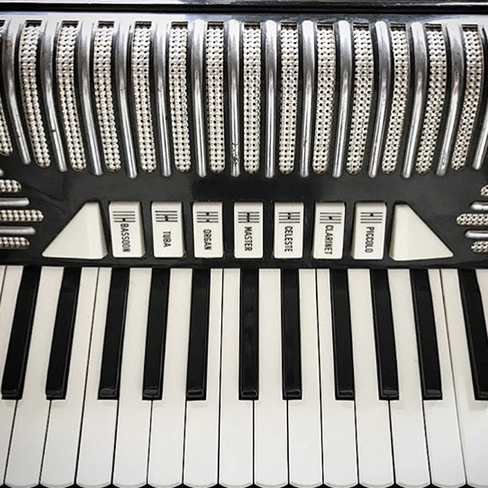
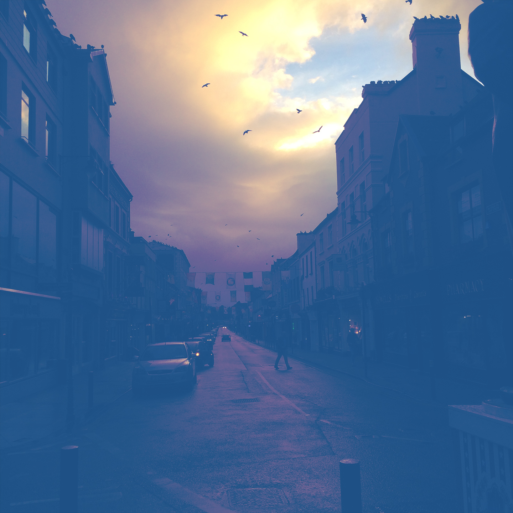

To hear more of my music,
visit my Soundcloud page.

Music
By placing speakers on her tummy (my home at this point in the story) that was playing Baker Street by Gerry Rafferty, my mom ensured that I was listening to music longer than I've technically been alive. I still play the tenor saxophone my grandfather bought me from a shop in Manhattan back in 1993. Nowadays I am a multi-instrumentalist, lyricist, composer, and performer working with musical acts, broadcast TV, mobile game development, and video production. I continue to explore, write and record in Brooklyn (and sometimes when I'm not in Brooklyn).

Latest Song
Linger & Lurk
Check out my latest composition 'Linger and Lurk' on Soundcloud. The theme of this song is akin to such songs as Stevie Wonder's Creepin' as it' i's about the haunting visits for people from your past via dreams. Stylistically this song is inspired by any of the many wonderful tunes by Kenny Rankin.
Mobile apps
Various mobile application music
I've had the opportunity to create original music for children's TV shows, games and learning applications. It has always been a fun experience capturing the best mood and music for the experience.
Jazz
MQ
This is a number I composed for the album Bamboo by Eastside Combo, a Latin-jazz group I performed and recorded with in Orlando, FL. Kevin Stevers on bass, Derrick Harvin on keys, Willis Rast on drums and yours truly on tenor saxophone.
Electronic
Electronic Sounds!
Beats, broadcast TV clips looped, Juno-60 vibrations, rhodes, electricity, vibes, and then some.
Country Ballad
Roses Today
In the traditional of sadness and loss often found in country music, Roses Today comes from the soul of those who've lost the opportunity to show deep affection by no choice of their own. Kick a pebble down the road, don't let her see you cry, throw away a dozen roses today.
For TV
Shiny Gift
I composed this number for PBS's Word World. The influence was a combination of Leonard Bernstein's Something's Coming and Danny Elfman's Theme from Edward Scissorhands. The final recording was produced by Nathaniel Reichman.
To hear some of my records and tapes,
visit my Mixcloud page.